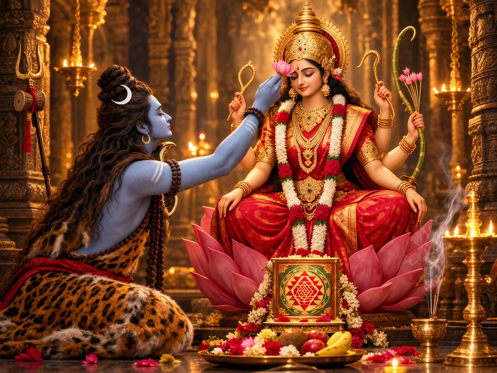

Sri Vidya Kaula Tantra
That’s not a metaphor to me. It’s where my own path started, and where I still sit with others who are just beginning to feel their way in.

Kaula tantra is a tantric path built around the Goddess. The word comes from kula, which means family. Kaula means “belonging to the family,” and the family here is everything: you, the people around you, the whole world, held together by one Divine Mother who is not separate from any of it.
Most paths ask you to leave ordinary life behind. Kaula says you can stay where you are. Work, family, your senses, your wanting, all of it can be part of the path. The freedom is meant to happen inside your life, not somewhere away from it.
The goal is the one every serious path points to, moksha, which just means freedom. In Kaula it comes from feeling that you were never separate from her.
Very little of this is written down. It was passed from teacher to student, which is why the guru matters more here than any book.
You will see both “Kaula tantra” and “Kaula tantric” used online. Tantra is the path. A Kaula tantric, or tantrika, is someone who walks it. The path is also called Kaula achara, Kaulachara or Kulachara.
Kaula is not one single school. Scholars usually describe four main streams, called transmissions, each with its own goddess and its own texts. The eastern one is Trika, the northern one follows Krama and Kali, the western one is Kubjika, and the southern one is Sri Vidya.
I practice in the southern stream. Sri Vidya is centred on Lalita Tripurasundari, the Goddess of the Sri Yantra. My lineage is the Sri Vidya Kaula tradition of Devipuram, in the tradition of Sri Annapurnamba sahita Sri Amritananda Natha Saraswati. Guruji was a nuclear physicist before he became a teacher. Guru Amma Annapurnamba teaches today.
The Navavarana Pooja, the nine fold worship of the Sri Chakra, is one of the core practices of this stream.
Read more about the lineage →It is not only about sex. Because Kaula does not treat desire as something shameful, it often gets reduced to that online. The teaching is much bigger: consciousness, the Goddess, the guru, ritual and meditation. I keep the public side of this site philosophical on purpose.
It is not a way to control other people. Nothing here is about power over anyone. It is about knowing yourself better.
It is not something to learn alone from a book. The path was always handed from person to person. That is why I offer guidance by private chat, one to one.
It is not medical care. If you are struggling with your health or your mind, please see a doctor or therapist as well. This is a spiritual path, not a treatment.
I didn’t come to this through the orthodox route, and honestly, I don’t think most people can anymore. Kaula tantra says the body you already have is the temple. You don’t have to leave your life, your senses, or your wanting behind to reach the Goddess. That’s what pulled me toward it.
Young people today are counting seconds, not minutes. Life is short on time in a way it wasn’t before, the learning curve is steep, and real teachers are hard to even find, let alone talk to. A lot of the gatekeeping around these teachings shuts people out before they get anywhere near them. I didn’t want to be one more locked door.
Tantra doesn’t ask you to push down what you feel, whether that’s grief, wanting, or pain that’s been sitting in your body for years. It asks you to sit with it and work with it, through ritual and meditation, real effort alongside real rest. Held that way, what looks like a wound can turn into the very thing that frees you.
That includes the parts of us that usually get treated as shameful. Our creative energy and our sexuality are part of that too. Tantra doesn’t hide them away or apologize for them. It holds them as sacred, part of the same life force the Goddess moves through. Nothing about you is outside her reach, and none of it needs to be suppressed to be spiritual.
If you let these ideas actually become part of how you see yourself, something in you starts to shift.
Pain everywhere. I still see it everywhere, if I’m honest. Some days it felt like being shut in a coffin, and I was inside it, scratching at the lid.
I had panic attacks. Couldn’t catch my breath. There was a time I was holding my breath on purpose, not to calm down, but to end it.
Then one day I closed my eyes. Closed my ears. Just sat with my breath. And I heard my own heartbeat. Really heard it. I kept listening, and under it there was a sound, like a volcano erupting inside my chest. A wheel, turning, vibrating, right there in my heart.
I didn’t know what had happened to me. It took years, a few teachers who came and went, and finally a path with real guidance, the Sri Vidya Kaula tradition of Devipuram, before I understood that was kundalini. Something in me had already begun, long before I had a name for it.
Read more about the lineage →Protection and clearing, worked through the body. Held in a private, consensual practice.
Magnetism and presence, worked through the body. For drawing in what fits you, not for controlling anyone else.
Working with the time energies held in the body, part of deeper kundalini practice.
Worship of the inner flame, done through the body, for clarity when things feel clouded.
Clearing obstacles before anything new begins, worked through the body.
The nine fold worship of the Sri Chakra, done through the body. A core practice of this lineage.
The body itself, honored as the Goddess’s temple. Private, guided, and fully consensual.
Guided meditation techniques to safely wake and work with this energy in the body.
All of these are worked through the body itself, offered one to one by private chat, at a pace that fits where you actually are.
Kaula comes from kula, which means family. It points to the idea that everything belongs to one family under the Divine Mother, and that freedom can be found while living in the world.
A Kaula tantric, or tantrika, is someone who follows the Kaula path of tantra. In the Sri Vidya stream that means worship of the Goddess as Lalita Tripurasundari, with ritual, meditation and a teacher to guide it.
Tantra is a big word. Kaula is one goddess centred stream of it, and it suits people who are living ordinary lives. Many classes sold as tantra today are about relationships or wellness. That is not what I teach.
Not exactly. Sri Vidya is one stream of Kaula, the southern one, centred on Lalita Tripurasundari. What I practice is Sri Vidya Kaula, in the Devipuram lineage.
Kaula achara, also written Kaulachara or Kulachara, is a name used for the Kaula path. The Kamakhya tradition in Assam is its own stream, with its own rituals that are mostly closed to people outside it. I practice Sri Vidya Kaula in the Devipuram lineage.
Guruji taught that it is open to people of any gender, caste, age or stage of life. What matters is that you come willingly, and as an adult.
For a long time it was written off as a path for low caste people, and most of the attention it gets in the media is about how a few people have misused it. Guruji spoke to this directly in his Kaula Achara Q&A. The path itself is about freedom, not harm.
Tantra uses desire as fuel for practice instead of pushing it down. That is how Guruji put it, and it is how I see it too.
No. Kaula is a path for people living full lives. You do not have to give up your work, your family or your senses.
The path has always been passed from teacher to student. I am still a student myself, so I talk from inside the path, and I will point you to the lineage for anything deeper than I can offer.
Fill out the contact form and tell me a little about where you are. I will write back to arrange a time to talk. It is all by private chat, with adults only, and there is no pressure.
Some of these answers follow Guruji’s own Kaula Achara Q&A, put in my own words. There is more in the complete guide.
I am still learning, still walking this path myself. I don’t offer answers from above it, only from inside it. If you are carrying something similar, an experience you can’t name, a body that feels like it’s working against you, a search for something real underneath the pain, I offer personal guidance by private chat. It’s a space to ask what you haven’t been able to ask elsewhere, and to find your own way toward the Devi within.
Fill in a short form and I’ll write back to arrange a time to talk. No calls and no pressure. Just a message to start.
Fill out the form